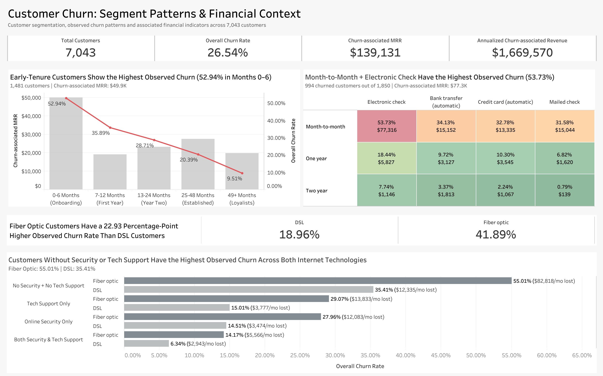

Total Customers
7,043
Data Analytics & Machine Learning
Built an end-to-end analytics and machine learning workflow to investigate customer churn, identify high-risk segments, and evaluate customer churn classification using Python, SQL, dbt and Tableau.

This project investigates customer churn using the Telco Customer Churn dataset, consisting of 7,043 customer records and 21 original variables.
The project combines data ingestion, data quality validation, SQL-based data transformation, business analysis, Tableau visualisation, machine learning and model explainability.
The objective is to understand which customer segments exhibit higher observed churn rates, quantify the associated financial indicators, and develop a reproducible analytical workflow that prepares the data for further investigation.
The analysis examines differences in observed churn across customer tenure, contract types, payment methods, internet technologies and service combinations.
It also explores whether customer characteristics can help classify the recorded churn outcome using machine learning.
7,043
1,869
26.54%
21
The target variable is Churn,
converted into a binary variable called
churn_flag, where 1 represents
customers with a recorded churn outcome and
0 represents customers without a recorded
churn outcome.
Source: Telco Customer Churn Dataset – Kaggle .
Developed a modular, reproducible data workflow to transform raw customer data into structured datasets for business intelligence and machine learning.
Used Python and Pandas to retrieve the source dataset and load raw customer records into a SQLite database.
Profiled missing values, duplicate records, customer identifiers, data types, numerical ranges and categorical consistency.
Used dbt and SQL to transform raw data into a dimensional Star Schema consisting of customer, contract and billing, service and churn fact tables.
Developed SQL analytical queries and Python export scripts to generate structured datasets for Tableau and machine learning.
The workflow is organised into independently executable stages, with centralised configuration, database validation and reusable Python modules. It is currently executed manually rather than through a scheduled production orchestrator.
Data quality was assessed before conducting business analysis and machine learning to reduce the risk of misleading results.
SQL queries were developed to investigate customer churn across different behavioural, contractual and service-related segments.
Month-to-month customers using electronic check had the highest observed churn rate among the analysed contract and payment combinations.
1,850 customers, including 994 churned customers.
Fiber Optic customers without online security or technical support showed the highest observed churn rate in the service-bundle analysis.
1,765 customers, including 971 churned customers.
Customers with 0–6 months of tenure exhibited substantially higher observed churn than the overall customer population.
1,481 customers, including 784 churned customers.
The three segments overlap, so their counts and financial metrics should not be added together to estimate unique customers. These findings describe associations in the supplied customer snapshot rather than causal relationships.
The financial analysis also calculated churn-associated Monthly Recurring Revenue (MRR) to quantify the snapshot monthly charges associated with customers carrying a recorded churn label.
The sum of snapshot monthly charges for all 1,869 customers with a recorded churn outcome was 139,130.85 in the dataset's currency units.
This is a snapshot-based financial indicator, not a directly observed accounting measure of realised revenue loss or a forecast of future losses.
Calculated observed churn rates across contract, payment, tenure and service-related customer segments.
Calculated churn-associated MRR and compared financial indicators across customer segments.
Developed an interactive Tableau dashboard to communicate key findings, segment differences and financial context.
Built and evaluated machine-learning models to classify the recorded customer churn outcome.
Developed a classification workflow to investigate whether customer characteristics could distinguish customers with different recorded churn outcomes.
19
70%
15%
15%
Logistic Regression was selected based on its highest mean cross-validation Average Precision in the recorded model comparison.
The selected Logistic Regression pipeline was evaluated on the held-out test set of 1,057 customers.
0.8324
0.6398
52.74%
75.44%
62.08%
0.1737
The classification threshold was 0.54, selected using validation data to maximise F1-score, with recall and precision used as tie-breakers.
The test results measure retrospective classification performance on held-out records from the same customer snapshot. They do not establish performance on future customer populations or future churn periods.
Applied SHAP to investigate how customer characteristics contributed to the selected model's predictions.
SHAP values explain model behaviour and should not be interpreted as evidence that a customer characteristic causes churn.
Prepared a reusable scoring interface that loads the saved preprocessing and classification pipeline to process a separate customer CSV.
The interface validates the required feature columns, calculates churn probabilities, applies the saved classification threshold and exports customer-level scores.
The scoring component is prepared for future compatible customer data. No genuinely new customer dataset has yet been scored.